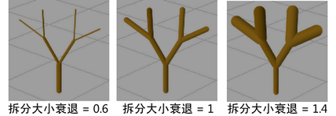

对于任何笔刷节点，以下选项将在“Paint Effects 笔刷设置”(Paint Effects Brush Settings)窗口和属性编辑器中显示为部分的子集。
- 起始分支(Start Branches)
-
定义管根部分支的数量。
- 分支数(Num Branches)
-
定义每次拆分时创建的分支数。另请参见下文中的“分支修剪”(Branch Dropout)。

- 最大拆分深度(Split Max Depth)
-
定义对管可进行分支的最大数量。
- 分支修剪(Branch Dropout)
-
定义随机“删减”以产生更加自然外观的分支的比例。如果“分支修剪”(Branch Dropout)为 0，则每次拆分都将恰好生成“分支数”(Num Branches)定义的数量的分支。
如果“分支修剪”(Branch Dropout)为 1，将删减所有分支。

- 拆分随机(Split Rand)
-
随机化分支点之间的间隙。如果“拆分随机”(Split Rand)为 0，则沿管以相等的间隔进行分支。该值越大，分支点之间的间隙的随机性就越高。
- 拆分角度(Split Angle)
-
定义分支从其原始路径拆分的角度。
- 拆分扭曲(Split Twist)
-
定义拆分时分支相对于其根部的扭曲度。如果该值为正值，则沿逆时针扭曲，如果该值为负值，则沿顺时针扭曲。如果“拆分扭曲”(Split Twist)为 1，则分支扭曲 360 度。
- 拆分大小衰退(Split Size Decay)
-
定义每次分支时应用的管大小因子。如果该值为 1，则分支的大小与其上一级分支相等。如果该值小于 1，则分支的大小小于其上一级分支（类似于真实树的分支）。如果该值大于 1，则分支的大小大于其上一级分支。
 - 拆分偏移(Split Bias)
-
定义沿管分布分支的方式。如果该值为 0，则分支大致沿管均等分布。如果该值为正值，则将分支推向管尖端。如果该值为负值，则将分支推向管根部。
- 最小大小(Min Size)
-
定义要对其进行“删减”的管必须的最小大小。如果一个管小于该大小，则不会对其进行删减。请参见下文中的“分支修剪”(Branch Dropout)。
- 中间分支(Middle Branch)
-
启用该选项，使拆分点处各个分支的主管继续增长（在拆分分支之间添加一个中间分支）。